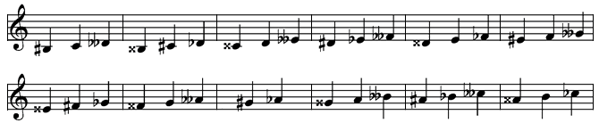

Aussi étrange que cela puisse paraître, la notation musicale n'a guère évolué en cinq siècles : elle est largement demeurée en l'état où l'a laissée l'évolution historique reliant la Renaissance à l'Age baroque. Serait-ce qu'elle avait atteint un état de perfection ne nécessitant aucun aménagement ultérieur ? Au vu de son incroyable complexité, ce serait surprenant, en tous cas contraire à tout ce qu'on a observé dans les autres disciplines, y compris les plus scientifiquement pointues. De fait, en sciences exactes, mathématique et physique, la notation a beaucoup changé au cours des siècles, dans le sens d'une simplification radicale ne causant, évidemment, aucun préjudice au contenu informationnel de la théorie. Le bénéfice a été immense pour des générations d'étudiants qui ont bénéficié d'une présentation rationalisée leur permettant de se concentrer sur l'essentiel.
Note. La première théorie physique d'envergure remonte à la théorie de la gravitation d'Isaac Newton. Relire et comprendre, dans le texte original, les "Principia (1687)" requiert d'y consacrer une vie d'historien des sciences. Certes tout se trouve, en substance, dans ce texte fondateur mais la compréhension de la notation et du langage utilisés participent davantage de l'égyptologie que de la science. Un siècle après Newton, sous la poussée des "Lumières", les exposés de Lagrange ont entrepris une simplification radicale de l'exposé, le rendant compréhensible du plus grand nombre même s'il s'écarte encore de celui enseigné actuellement dans nos universités. Le point important est qu'on ait compris qu'une simplification s'imposait et qu'on ait tout fait pour qu'elle se mette en place.
Une évolution similaire s'imposait sans doute également en musique mais elle a largement fait défaut, la notation étant restée attachée à une portée diatonique surchargée d'annotations dont la nécessité ne saute pas aux yeux.
La portée diatonique
Cycle de 20 quintes (21 notes)
Nous avons rappelé, dans une chronique antérieure ("Gammes et Tempéraments"), qu'un cycle de 20 quintes définit 21 notes allant de fab à si# (Les 7 notes classiques, naturelles, diésées ou bémolisées). En tempérament égal, on réduit cet ensemble à 12 notes équidistantes (Les points rouges sur la figure) en fusionnant les 9 doublets anharmoniques (réb=do#, etc), proches d'un comma pythagoricien. Cette réduction cavalière a été adoptée il y a 200 ans et elle n'offense plus personne aujourd'hui, sauf les amoureux de la musique ancienne qui demeurent fidèles au tempérament inégal.
Dans la notation usuelle, les musiciens placent les notes naturelles, dans l'ordre des fréquences croissantes, sur les lignes et les interlignes successives d'une portée à 5 lignes. Les notes altérées sont situées aux mêmes emplacements que leurs homonymes naturels mais elles sont marquées de leur altération afin qu'on les distingue.
Portée diatonique en tempérament égal (Seuls les dièses sont représentés)
Nous pensons être d'autant mieux habitués à cette notation que les claviers de piano sont conçus pour s'y adapter, réservant les touches blanches aux notes naturelles et les touches noires aux notes altérées.
Clavier de piano (88 touches)
Touches de piano
Digression concernant les claviers. Si vous avez (bien) observé plusieurs claviers (disons) de pianos, vous avez peut-être remarqué que les queues de touches blanches ne sont pas toutes de largeurs égales. La conception d'un "bon" clavier pose, en effet, un problème non trivial d'optimisation linéaire, étudié en particulier par Kevin Jones, sur son fameux site MathPages. Vu que je lui emprunte les résultats, je conserve ses notations anglo-saxonnes, où les largeurs de touches sont désignées par le symbole littéral de la note correspondante (do=C, ré=D, ..., la=A, si=B). La figure ci-contre devrait vous aider à distinguer, d'une part, les palettes des touches blanches (notées en majuscules) de leurs queues (notées en minuscules) et d'autre part, les largeurs des touches noires (notées en minuscules flanquées d'un dièse). Le problème est qu'il n'est pas possible d'assurer simultanément l'égalité des largeurs des palettes des touches blanches (A=B=C=D=E=F=G), de leurs queues (a=b=c=d=e=f=g) et enfin celles des touches noires (c#=d#=f#=g#=a#). C'est la conséquence du système d'équations, 3C = 3c + 2c# & 4C = 4c + 3c# dont l'unique solution imposerait c# = 0, ce qui n'aurait aucun sens. Pour des raisons esthétiques (mais aussi pour ne pas compliquer la fabrication des touches), les facteurs de claviers souhaitent conserver l'égalité des palettes blanches et des touches noires (A=B=C=D=E=F=G et c#=d#=f#=g#=a#)) et c'est tant pis pour les queues blanches qui seront de largeurs inégales (Ceci n'est vrai que pour le piano; dans le cas de l'orgue, on a souvent privilégié l'égalité des queues blanches et des touches noires, au détriment des palettes blanches, devenues inégales. Cela dit, vu l'ancienneté des instruments, il n'y a pas deux claviers d'orgue qui se ressemblent). Le problème posé est à présent de minimiser l'écart entre les largeurs de queues. Je vous fais grâce des calculs et vous donne la réponse : c = d = e = C - 2c#/3 & f = g = a = b = C - 3c#/4. L'écart entre les queues longues et courtes vaut c#/12, soit le douzième de la largeur d'une touche noire, ce qui est acceptable. Sur un piano standard, la largeur d'une octave est de l'ordre de 164.5 mm, ce qui donne une largeur de C = 164.5/7 = 23.5 mmm pour une palette blanche (on néglige les interstices). Si on confère une largeur standard de c# = 13.7 mmm aux touches noires, on trouve les valeurs suivantes, effectivement rencontrées chez un grand nombre de pianos modernes : c = d = e = 14.37 mmm & f = g = a = b = 13.23 mm. Ces valeurs sont compatibles avec une activation des touches blanches au niveau de la queue, un jeu qui permet une grande délicatesse dans le toucher, tel que le pratiquait le grand Vladimir Horowitz. A noter que l'on pourrait encore diminuer les inégalités entre les largeurs des queues mais ce serait au prix d'un écart entre les palettes F, G, A et B, plus larges que C, D et E de 2% environ.
La portée diatonique n'est simple qu'en apparence car dès qu'on l'examine de près, il s'avère que son (dé)codage s'apparente à un véritable casse-tête. En particulier, ce que l'on voit ne correspond pas à ce que l'on entend, ce qui est plutôt fâcheux pour un système qui entend favoriser la lecture à vue. Analysons-là de plus près (Les figures qui suivent sont sous Licence CC, Music Notation Project, cf infra) :
La portée classique ne respecte pas l'octave : les do successifs y apparaissent alternativement sur une ligne et sur une interligne. Cela semble anodin mais outre que cela fait désordre, cela prépare le pire à venir.
Deux notes situées en un même emplacement mais portant des altérations différentes ne sonnent pas de la même façon (On a indiqué l'écart en demi-tons) :
Ces notes sonnent différemment
Inversement, deux notes situées en des emplacements distincts peuvent parfaitement sonner pareillement.

Ces groupes de notes anharmoniques sonnent pareillemment
Un simple enchaînement do-ré peut se concevoir de 25 manières différentes selon que les notes sont naturelles, simplement ou doublement altérées. L'encadré sur la figure suivante rappelle que 8 configurations sont plus probables que les autres, nettement exotiques. Les chiffres en indices mentionnent à nouveau le nombre de demi-tons entre les notes dans chaque cas : on constate qu'on peut entendre jusqu'à 9 enchaînements sonores différents. La figure est dessinée en clé de sol (sinon tout change !) et sans altération à la clé (sinon tout rechange !).
25 jeux d'altérations sur do-ré (Licence CC MNP)
On retrouve la même complexité au niveau des accords. Sur le papier tout semble simple, les intervalles se calculant sur base de la distance qui sépare les notes, en comptabilisant les lignes et les interlignes.
Intervalles harmoniques
Mais cette simplicité n'est qu'apparente car elle met des intervalles différents dans le même sac sans préciser leur qualité (juste, majeur ou mineur). Ce renseignement vital dépend de la position verticale des intervalles donc aussi de la clé utilisée.
Tierces majeures (M) ou mineures (m) ?
Cela se complique encore si une note est altérée. Observons les deux figures qui suivent : celle de gauche affiche 5 versions d'un accord de deux notes utilisant les mêmes positions sur la portée mais sonnant différemment, avec, dans l'ordre, 2 (tierce diminuée), 3 (tierce mineure), 4 (tierce majeure), 5 (tierce augmentée) et 6 (tierce doublement augmentée) demi-tons d'écart. La figure de droite illustre la situation inverse de deux notes qui sonnent à 3 demi-tons de distance bien qu'elles occupent des positions différentes. Leurs fonctions sont, dans l'ordre, une seconde augmentée, une tierce mineure et une quarte doublement diminuée.
Intervalles tels que vus et entendus
La diversité des tessitures des instruments, y compris de la voix, a suggéré un système de clés opérant une translation verticale et globale des notes. Les corporations d'imprimeurs, de cornistes, d'altistes, etc, ne sont pas pour rien dans cette invention, où tout est prévu pour économiser l'espace disponible et l'encre noire (car on voit bien qu'un code des couleurs, une par octave, viendrait aisément à bout du problème posé). La manie des clés a fait fureur au 19ème siècle, surtout en France, où on en a compté jusqu'à 10, un vrai cauchemar pour les apprentis ! On a heureusement fini par en limiter l'usage dans l'enseignement général.
La portée classique case aux mêmes emplacements (lignes ou interlignes) les notes homonymes, naturelles ou altérées. Les imprimeurs, encore eux, ont tôt remarqué le parti qu'ils tireraient de la mise en évidence à la clé des altérations constitutives d'une tonalité particulière, en conformité avec la théorie du cycle des quintes. Toute altération de ce type porte, sauf mention contraire, sur toutes les notes de même nom, quelles que soient leur position verticale, même s'il y a octaviation. Le (dé)chiffrage de la portée doit combiner les informations codées par la clé et l'armure mais le compositeur mais est libre d'y ajouter toutes les altérations passagères qu'il estime nécessaires. Celles-ci demeurent valables au sein de la mesure en cours mais elles s'éteignent ensuite sauf si elles sont renouvelées. On neutralise une altération existante en affectant la note d'un bécarre (♮), un symbole qu'on peut aussi utiliser dans tous les cas où la confusion est devenue telle qu'il s'impose de préciser que la note voulue est naturelle.
Chacun des points évoqués individuellement peut sembler anodin. Après tout, les conventions d'écriture sont inévitables dans tous les domaines où une notation sophistiquée est nécesaire et si certaines sont malheureuses, elles sont tellement ancrées dans les habitudes qu'on perdrait son temps à essayer de les corriger; on finit par s'y faire. Mais il arrive un moment où l'accumulation des anomalies finit par effrayer. Voici un exemple même pas extrême, cinq mesures empruntées à la Rhapsodie hongroise n°2 de Franz Liszt, où 6 dièses à la clé sont systématiquement remis en cause par un flot d'altérations passagères. Lorsque vous découvrirez plus loin la transcription limpide de ce passage sur une portée chromatique, vous commencerez à réaliser que quelques chose ne tourne pas rond dans la notation traditionnelle.
Au fond, l'essentiel des difficultés rencontrées sont la conséquence de la non linéarité de la portée diatonique : elle s'apparente à une échelle dont l'écartement des barreaux, représentant les intervalles entre les notes, n'est pas constant. En tempérament égal, revoyez la figure qui ouvrait cette section, il est de deux types (ton entier et demi-ton diatonique) et c'est pire en tempérament inégal où il faut au moins y ajouter le demi-ton chromatique. La surcharge des symboles présents dans une partition provient de ce qu'il faut en permanence compenser l'absence de linéarité dans la progression des intervalles.
Les apprentis les plus persévérants mettent des années à s'y retrouver. Tous les musiciens chevronnés sont passés par là d'où ils vous expliquent qu'ils ne voient pas le problème, que c'est comme cela qu'ils ont appris a musique, que les suivants n'ont qu'à faire pareil et enfin, sentence définitive, qu'il n'y a pas moyen de faire autrement car cette graphie compliquée représente, en fait, l'orthographe musicale qu'il faut connaître. Et simplifier l'orthographe, c'est bien connu, est une opération rarement couronnée de succès !
Etrange conclusion quand on se rappelle l'objection de Rameau faite à Rousseau que son système de notation n'était pas assez visuel. La situation serait inexorablement normale s'il n'y avait pas moyen de faire autrement mais précisément cela est possible : une portée chromatique (cf infra) débarrasse instantanément la partition des symboles inutiles.
Ah l'orthographe !
A y réfléchir, il existe un autre domaine où l'on se trouve confronté à une situation du même genre : les gardiens de la langue française tiennent particulièrement au respect d'une orthographe qu'on trouve dans les écrits de Voltaire (1694-1778), qui ne faisait qu'appliquer des règles dédicacées à l'usage des lettrés par son professeur, Pierre-Joseph Thoulier (dit l'abbé) d'Olivet (1682-1768).
Des voix se sont régulièrement élevées pour réclamer une simplification des règles alambiquées dont le français s'est fait une spécialité. Elles n'ont jamais vraiment été entendues au contraire de ce qui s'est passé en Italie ou en Espagne, par exemple, pourquoi ? C'est qu'une Académie toute-puissante veille sur son fonds de commerce et tant pis pour nos jeunes générations ou pour les étrangers qui ne comprendront jamais pourquoi "sonnant" prend deux "n" alors que "consonant" ou "dissonant" n'en prennent qu'un et ce n'est qu'un exemple fort anodin. Car un inventaire affligeant a été dressé depuis longtemps qu'il vaut la peine d'évoquer brièvement afin qu'une fois encore on prenne conscience du problème.
En 1904, cela ne date pas d'hier, Monsieur Paul Meyer (1840-1917), Membre de l'Institut, a été sollicité par son ministre de tutelle pour présider une commission chargée d'examiner les conditions d'une réforme de l'orthographe française. Il en a résumé les recommandations circonstanciées dans un mémoire intitulé Sur la simplification de notre orthographe. Bien qu'au bilan il n'ait été suivi d'aucun effet, ce document parfaitement argumenté vaut une lecture attentive tant il est édifiant. Il démontre, exemples à l'appui, que les justifications étymologiques, régulièrement invoquées pour justifier l'immobilisme, fonctionnent imparfaitement et souvent même à contresens. Je me contente de résumer le paragraphe réservé aux lettres "g" et "j", responsables de l'une des pires irrégularités de notre orthographe. Cet exemple a ceci de précieux qu'il prépare, en musique, l'épineux problème de la synonymie des notes anharmoniques.
Le g marquait en latin le son de la gutturale sonore
ou faible devant toute voyelle. Peu à peu il s'altéra devant e, i, et arriva graduellement au son palatal que nous figurons par j. Il eût été naturel de le remplacer par cette lettre, et on le fit en certains cas, mais le plus souvent la graphie resta fidèle au g; seulement, il fut convenu que, devant e et i, le g aurait le son du j : geindre (de gemere), gent (de gentem). Par contre, pour rendre au g suivi d'e, i, sa valeur ancienne, il fallut lui adjoindre un u. ... Il est assurément incommode et illogique de donner au même signe g deux valeurs, selon la voyelle qui suit et il est surtout superflu d'avoir deux manières (ge et j) de rendre un même son (donjon et mangeons, goujat et orgeat). De plus, en certains cas, la graphie par ge prête à confusion. Ainsi, dans les mots gageure, vergeure, beaucoup de personnes, ne sachant pas que l'e n'a été introduit que pour donner le son palatal au g, prononcent, non pas gajure mais gageure, avec le son qu'a le groupe eu dans heure.
Il n'y a que deux moyens de supprimer cette cause de confusion. Le premier consiste à munir le g palatal d'un signe diacritique comme on l'a fait pour le c (cédille), l'autre à substituer le j au g palatal. Le premier moyen étant inapplicable - le g a une forme trop allongée pour qu'il soit possible de le munir d'une cédille et d'ailleurs les imprimeurs protesteraient - le seul parti à prendre est donc de substituer partout j à g palatal. On écrira donc manjer, manjons, manjant, oblijer etc.
A cette réforme, on ne peut même pas opposer le pitoyable argument de l'étymologie, car c'est l'orthographe officielle qui nous oblige à écrire genièvre avec un g, contrairement à l'étymologie (juniperus). A ce compte, ne faudrait-il pas, pour être conséquent, écrire geambe au lieu de jambe, puisque le type. étymologique est le latin populaire gamba ?
Ce n'est un secret pour personne, l'orthographe française est de plus en plus maltraitée par les nouvelles générations qui voient de moins en moins l'intérêt de se plier à toutes ses fantaisies. Même la grammaire subit leurs assauts (in)volontaires, parfois anodins - qui s'amuse encore à placer les subjonctifs exotiques ? -, parfois dangereux pour la compréhension.
A première vue, l'orthographe musicale semble bien mieux respectée mais c'est une illusion d'optique : tout le monde doit apprendre à écrire mais tout le monde n'apprend pas la musique et parmi ceux qui s'y risquent, une forte proportion jette rapidement l'éponge.
La musique n'est pas un métier qu'on apprendrait en entrant à l'université, vers ses 18 ans. On peut entamer des études supérieures en sciences avec son baccalauréat pour seul bagage, cela est impensable en musique. Celui qui n'est pas musicien à dix ans risque fort de ne l'être jamais car seul un enfant malléable peut adhérer à un système construit à ce point en-dehors de toute logique.
La musique est l'art subtil d'un compositeur, qui, ayant en tête un ensemble de son(orité)s, désire les faire partager par le plus grand nombre, peu importe les distances ou les siècles qui les séparent. En peinture, tout serait simple, le tableau serait là, prêt à l'emploi pour peu qu'il ait résisté aux épreuves du temps mais en musique des intermédiaires sont requis : une partition devant noter au plus précis les intentions du compositeur, un copiste qui ne se trompe pas dans la mise au net et (au moins) un interprète chargé de traduire en sons le texte écrit, sans le trahir.
C'est vite dit et le fait est qu'une oeuvre échappe rapidement à son auteur. Ferrucio Busoni (Sketch of a new Esthetic of Music) n'était même pas d'accord avec ce qui précède : il était d'avis que la notation est de toutes façon impuissante à transmettre l'intention du compositeur d'où l'invitation, pour ne pas dire l'obligation, faite à l'interprète, de prendre les libertés (sacrilèges !) qui s'imposent pour oeuvrer au travail de (re)création. Tout le monde (loin de là !) ne partage pas l'avis de Busoni et pourtant lorsque plusieurs interprètes s'emparent d'une oeuvre, ils la traduisent chacun à leur manière qui est toujours différente. Jusqu'où le devoir de mémoire va-t-il en musique ?
On a dénombré, sur les 250 dernières années, plusieurs centaines (!) de propositions de réformes de l'orthographe musicale mais toutes, à ce jour, ont échoué à convaincre la communauté des musiciens. Tentatives maladroites, Frilosité ou Conservatisme des professionnels ou simplement Chimère, la question mérite un examen attentif.
Le nombre élevé des propositions faites a fatalement nuit à leur entreprise car on imagine bien la lassitude d'une commission qui aurait dû les examiner toutes. L'effet pervers de cette pléthore, c'est que même si une tentative intéressante se présentait, elle passerait à la trappe comme toutes les autres.
On ne compte plus les tentatives de rationalisation de la notation musicale depuis la Révolution française. Jean-Jacques Rousseau, le philosophe bien connu, a même fait figure de précurseur à cet égard. Il était également musicien amateur au point d'avoir composé quelques oeuvre(tte)s sans prétention et surtout d'avoir polémiqué avec les professionnels de son temps (Sa querelle avec Rameau est restée célèbre sous l'appellation Querelle des Bouffons). Aujourd'hui, s'il semble étrange que d'Alembert et Diderot aient pensé à lui pour rédiger les articles concernant la musique, dans l'Encyclopédie, il apparaît que sa position extérieure au cénacle des professionnels a permis une vision d'autant plus intéressante que Rousseau ne manquait pas de bon sens.
Il était dans l'air du Temps des Lumières de classifier et de rationaliser tous les domaines de l'activité humaine (calendrier, poids et mesures, etc). Le 22 août 1742, Rousseau s'est présenté devant l'Académie des Sciences (sic) et lui a lu son Projet concernant de nouveaux signes pour la musique. Les commissaires, Mairan, Hellot et Fouchy, l'ont justement recalé mais pour trois mauvaises raisons, à savoir que la méthode 1) était incompatible avec la pratique de la transposition - ce qui est inexact -, 2) ne présentait aucune utilité suffisante pour remplacer la musique ordinaire - une façon de laisser entendre que celle-ci donnait satisfaction - et 3) qu’elle avait déjà été inventée par le Père Jean-Jacques Souhaitty en 1677. Seul Rameau, consulté indépendamment, fit l'objection sérieuse que l'interprète confronté à une cascade ascendante ou descendante de notes avait besoin du support visuel de la portée pour en suivre l'évolution, ce que la succession des chiffres de Rousseau ne permettait pas. Le système de Rousseau est tombé aux oubliettes sauf que, "relooké", il a refait surface , en Chine, où il est apprécié pour les facilités qu'il offre dans le cadre de l'initiation des enfants. Si vous voulez approfondir la question, reportez-vous au document intitulé Le Devenir du Système de Notation musicale de Jean-Jacques Rousseau, issu des recherches du musicologue canadien, Claude Dauphin. Cela dit, si la méthode de Rousseau règle effectivement le problème des clés, devenues inutiles, elle ne propose rien pour les altérations qui subsitent sous la forme d'un chiffre barré en montant (/dièse) ou en descendant (\bémol).
Une notation duodécimale
Il est intéressant de dépasser la démarche de Rousseau. En adoptant l'arithmétique traditionnelle, en base 10, Rousseau passait à côté du vrai problème : l'adoption imminente du tempérament égal imposait quasiment une arithmétique en base douze mais justement Rousseau était un farouche opposant de ce tempérament égal.
Avec le nombre de mathématiciens (Euler, d'Alembert, ...) et de physiciens (Sauveur, Huyghens, ...) qui s'intéressaient à la théorie musicale, à l'époque baroque, on peut se demander ce qui se serait passé si le tempérament égal avait été adopté plus tôt. On peut raisonnablement imaginer qu'il s'en serait bien trouvé un pour proposer un modèle purement numérique fondé sur l'arithmétique en base 12. Dans ce système, les 12 chiffres se notent 0, 1, 2, 3, 4, 5, 6, 7, 8, 9, X (pour dix) et Y (pour onze) et un entier à deux chiffres, mn, suffit pour désigner chaque demi-ton donc chaque note :
Le chiffre des douzaines, m, désigne l'octave à laquelle la note appartient. Il importe de numéroter ces octaves selon la recommandation internationale qui situe le la du diapason dans l'octave n°4 (la4 = 440 Hz). Cela permet de démarrer la plage audible au do0 = 16.35 Hz. La convention européenne (la3 = 440 Hz) obligerait à situer le premier do audible dans une octave n°-1, ce qui ne permettrait pas une numérotation en base 12 (Le chiffre des douzaines ne peut être négatif).
Le chiffre des unités, n, désigne la note (tempérée) selon le codage suivant :
do = 0, do# = réb = 1, ré = 2, ré# = mib = 3, mi = 4, fa = 5
fa# = solb = 6, sol = 7, sol# = lab = 8, la = 9, la# = sib = X, si = Y
Le la du diapason se note donc 49, dans ce système, que vous seriez bien avisé de prononcer quatre-neuf et non quarante-neuf, afin d'être sûr de ne pas mélanger intempestivement les arithmétiques en bases 10 et 12.
La figure suivante reprend les 88 touches du piano moderne allant du la0 (27.5 Hz) au do8 (4186 Hz), chaque note recevant son code duodécimal. Observez que ce code est pair pour les notes do, ré et mi et impair pour les notes, fa, sol, la et si.
Clavier de piano (annotation duodécimale)
Plus aucune portée n'est nécessaire, une suite de nombre suffit. Des raffinements sont évidemment requis afin de préciser les paramètres de durée, d'intensité, de ligatures, etc, mais ils ne posent pas de problèmes particuliers. Un accord peut être représenté par un vecteur colonne qui empile de bas en haut les notes constitutives au départ de la note fondamentale. La notation, entièrement linéaire, n'implique que des calculs arithmétiques élémentaires en base 12. On fixe les idées en transcrivant le fragment lisztien ci-dessus, sous la forme :
Fragment lisztien (Rhapsodie hongroise n°2) en notation duodécimale
Bien que ce codage affiche instantanément chaque note, octave comprise, on présume que les musiciens resteront attachés aux motifs dessinés par les notes sur une portée. La portée chromatique exaucera ce voeu (Cf infra).
Cette notation est absolue en ce qu'elle renseigne chaque note individuellement. On pourrait préférer une notation relative où chaque note serait chiffrée relativement à celle qui la précède (mélodiquement) ou qui la supporte (harmoniquement). L'exemple proposé est particulièrement adapté à ce codage relatif puisque les accords de tierces et d'octaves progressent mélodiquement par augmentation ou diminution d'un demi-ton. Ceci rencontre l'objection de Rameau en cas de cascade de notes, l'exécutant étant présumé capable d'aditionner ou de soustraire eux entiers fusse en base 12.
The Music Notation Project
Il est juste de dire que la plupart ont été l'oeuvre de scientifiques éventuellement musiciens amateurs qui désiraient épargner aux générations futures les affres d'un apprentissage apparenté au calcul du nombre pintes qui entrent dans un gallon. Telle est le cas de la Méthode Frémond. Le travail de cet ingénieur (!) vaut davantage par ses motivations que par le résultat final.
Les musiciens professionnels n'ont jamais vu l'intérêt d'une telle entreprise : ils ont par définition franchi l'obstacle de la théorie musicale et, en ce qui les concerne, ce serait précisément les encombrer que de changer quoi que ce soit à des habitudes chèrement acquises.
Echaudés par tous ces échecs individuels, les candidats réformateurs sont actuellement majoritairement ligués au sein d'une association qui permet les échanges critiques qui ont fait défaut aux prédécesseurs.
MNMA (Logo)
The Music Notation Modernization Association (MNMA) existe, aux USA, depuis 1985. Elle a fait place, en 2008, au Music Notation Project (abrégé dans ce texte en MNP pour les besoins d'une référence en Creative Commons) . Comme son nom l'indique, cette institution aspire à une refonte de la notation musicale, conformément au Credo suivant, traduit pour la circonstance :
Le but est de rencontrer les difficultés de la notation musicale traditionnelle qui rend la lecture d'uhe partition inutilement difficile, posant des difficultés injustifiées aux musiciens et décourageant un nombre anormalement élevé d'apprentis-musiciens.
The goal is to address the shortcomings of traditional music notation that make reading music substantially more difficult than necessary, pose unwarranted hardships for musicians, and prevent many young people from becoming fluent music readers.
Bien qu'ouverte à tous, cette association est majoritairement composée de musiciens, ce qui est plutôt bon signe même si on aurait beau jeu de faire remarquer qu'aucun d'entre eux n'est un "grand" musicien. Ce ne devrait pas être un obstacle tant il est vrai qu'en musique particulièrement, les meilleurs pédagogues ne sont pas les plus grands créateurs, de même que les bons professeurs de chants ne sont eux-mêmes pas de grands chanteurs.
Il est vrai que les grands musiciens sont des personnalités complètement à part, peu concernées par l'effort pédagogique de transmettre leur art aux plus démunis. Par ailleurs les grands professeurs de chant n'ont jamais brillé sur scène et personne ne conteste l'utilité de leurs conseils. Les musiciens hyperdoués ont ingurgité la théorie musicale sans trop de douleur et il ne faut pas attendre d'eux qu'ils volent au secours de tous ceux qui n'ont pas leurs facilités : ils estiment au contraire plus ou moins (in)consciemment que les autres n'ont qu'à faire le même effort que celui qu'il ont fait et ils ne s'embarrassent aucunement du fait que ce système pourrait être inadapté au plus grand nombre, c'est le syndrome de la Tour d'ivoire que l'on connaît dans toutes les disciplines y compris scientifiques.
La portée chromatique
Portée chromatique
La plupart des notations présumées simplifiées ont recours à une portée (linéaire), dite chromatique, où les 12 demi-tons de la gamme tempérée sont représentés à égales distances les uns des autres. Le but avoué est de supprimer les altérations et les clefs et de rendre la transposition immédiate. Leur slogan est clair et net :
Une Position = Une Note = Un Son
Les esprits chagrins chicaneront en faisant observer que cinq lignes ne suffisent pas pour parcourir une octave complète, que cela représente un gaspillage d'espace malvenu et que cela pourrait compliquer le déchiffrage en cas de débordement d'octave. Nous verrons sous peu que ces remarques sont de bien peu de poids face aux avantages offerts. On peut arranger cette portée chromatique de multiples façons et vous trouverez le détail de plusieurs variantes sur le site du MNP. Notre choix sera vite fait, visant au plus simple.
En poussant la logique à l'extrême on en viendrait à l'idée de rendre le clavier du piano conforme à la nouvelle portée. Bien que des essais aient été tentés il n'ont aucune chance de se généraliser en Occident où le nombre des praticiens est trop faible pour justifier une telle entreprise. Peut-être qu'en Chine ... . Ce n'est heureusement pas indispensable car les touches du clavier actuel sont facilement identifiables sur la portée chromatique.
Arnold Schönberg : le style et l'idée
Notation de Hauer
S'il est un domaine où la portée chromatique devrait s'imposer c'est bien celui de la musique dodécaphonique. Les considérations sémantiques relatives aux fonctions tonales disparaissent naturellement lorsqu'on aborde la composition selon la méthode des 12 sons (dodécaphonisme). Tant qu'à révolutionner (le monde de) la musique, cette école était le lieu idéal pour simplifier la notation en se passant des altérations et en adoptant la numération en base 12. Joseph Mathias Hauer qui avait précédé de peu Schönberg dans ses recherches avait bien vu cette opportunité mais sa notation sur une portée à 8 lignes est restée prisonnière de sa technique particulière de composition, basée sur la notion de trope. N'étant pas aisément généralisable, fait Hauer en fut le seul utilisateur.
Reste à entendre l'avis de Schönberg sur la question. Il s'est effectivement exprimé à ce sujet dans des écrits épars qui ont été rassemblés (et traduits en français) dans un ouvrage intitulé "Le Style et l'Idée" (La Notation : Titre VII, §15). Schönberg commence par énumérer quelques défauts regrettables :
La notation usuelle nomme les notes alors qu'elle devrait noter les sons.
Elle n'est même pas aisément lisible dans les cas où l'on veut noter des accords (dissonants) d'un demi-ton.
Il n'existe pas d'agrément sur l'utilisation du bécarre les compositeurs utilisant des conventions différentes relatives à la portée des altérations au sein d'une mesure.
L'octave comporte 12 intervalles et non 7 et chacun doit trouver sa place sur la portée.
On retrouve dans cette dernière remarque, que Schönberg avait déjà lue dans "L'essai d'une notation organique pour le piano (1910)" de Ferrucio Busoni, un plaidoyer pour l'adoption de la portée chromatique. Ce qui apparaît comme une évidence pour un adepte de la tecnique des 12 sons s'impose tout autant dans tous les autres cas, du moment qu'on adopte le tempérament égal.
L'article de Schönberg se poursuit par l'exposé de sa variante personnelle de la portée chromatique. L'octave s'y décline sur une portée à quatre lignes seulement mais - il n'y a pas de miracle ! - c'est au prix d'une complication graphique (apposition d'une barre oblique à gauche, au centre ou à droite de la note) qui lui ôte tout pouvoir de séduction. Au bilan, la notation de Schönberg n'a convaincu que son auteur - et encore, il ne l'a mentionnée que dans ses écrits théoriques - ce qui semble prouver que les traditions ont la vie dure même chez les révolutionnaires.
Notation chromatique de Schönberg
La notation Godjevatz
Rapport de G-B Shaw
Parmi les nombreuses variantes recensées par le MNP et exploitant les propriétés de la portée chromatique, il en est une dont la sobre clarté a retenu mon attention (facsimile). Elle est due à Velizar Godjevatz (1898-1986), un obscur musicien américain sans doute d'origine bulgare. Elle a été publiée, en 1948, dans une revue tout aussi obscure, la Dozenal (formerly Duodecimal) Society of America qui prône, sans grand succès, la généralisation du système arithmétique en base 12 dans tous les secteurs d'activité de la société. Vous comprendrez le lien lorsque vous découvrirez le principe simplissime de sa notation (Il n'est pas clair si Godjevatz était conscient que sa méthode était proche de celle proposée par Constance Virtue dès 1933). Au plan syntaxique, la démonstration semble convaincante, tel fut en tous cas l'avis (reproduit ci-contre) du célèbre critique musical, George Bernard Shaw, sollicité par la Société en tant que rapporteur. Par contre le lieu plus que confidentiel de la publication était certainement mal choisi et de fait le projet de Godjevatz ne lui a (malheureusement) pas survécu.
4 ème octave, selon Godjevatz
La figure précédente représente l'octave n°4 complète (du do inférieur jusqu'au do supérieur), dessinée sur une portée à 7 lignes. Chaque demi-ton occupe une position unique comme toujours avec la portée chromatique. Pour plus de lisibilité, la ligne médiane n'est pas dessinée entièrement, elle n'est qu'esquissée lorsque la note, nécessairement fa# (= solb), vient s'y placer. Observez que les trois premières notes naturelles (do, ré et mi) occupent les 3 lignes inférieures tandis que les quatre dernières notes naturelles (fa, sol, la et si) occupent les interlignes supérieures.
On note le recours à l'arithmétique en base 12, avec les chiffres 0, 1, 2, ..., 9, X (pour 10) et Y (pour 11). Comme déjà mentionné (cf supra), toute note est représentée par un entier à deux chiffres où le chiffre des unités désigne la note et le chiffre des douzaines désigne l'octave. Dans l'énumération, les trois notes (naturelles) basses sont paires et les quatre notes hautes sont impaires. Les degrés, ordinairement numérotés en chiffres romains, sont facilement identifiables, les trois premiers occupant les lignes inférieures et les quatre derniers occupant les interlignes supérieurs : si do est la tonique, de degré Ⅰ, la quarte (fa) occupe le degré Ⅳ, la quinte (sol) occupe le degré Ⅴ et l'octave (do supérieur) le degré Ⅷ. A noter que Godjevatz préférait le terme "homosonance" pour désigner l'intervalle d'octave, do4-do5 (Il répugnait à y voir une quelconque allusion à l'entier 8).
Octaves 4 et 5, selon Godjevatz
La deuxième figure présente deux octaves successives, n°4 et 5, qui se raccordent parfaitement du fait qu'on commence et qu'on termine avec un do. L'empilement des deux octaves fait apparaître une sous-portée à 5 lignes, similaire à la portée classique. On évite cependant la perte de place qu'occasionne cet empilement en numérotant les octaves, comme représenté sur la figure.
La portée de Godjevatz remplit les critères simplificateurs visés : plus de clé, plus d'altération et une transposition à vue désormais triviale. Cela était prévisible puisqu'elle est chromatique. Que devient dans ces conditions le fragment lisztien infernal cité en ouverture ? La réponse est facile et bien qu'il ne devrait pas être compliqué de concevoir un logiciel de traduction automatique, je vous livre le travail fait-main. Il saute maintenant aux yeux que ce fragment qui paraissait si compliqué dans la notation usuelle n'est, en fait, qu'une succession de progressions d'accords par demi-tons :
Fragment lisztien (Rhapsodie hongroise n°2) sur une portée chromatique
Last but not least, cette méthode possède une propriété qui devrait la rendre encore plus attractive aux yeux des sceptiques : rien n'interdit, en effet, de l'annoter par les altérations telles qu'elles apparaissent dans la notation classique. Certes, ce serait absurde puisqu'elles feraient double emploi, nous renvoyant à la complexité d'origine, mais au moins cela permettrait une transition en douceur entre les tenants des notations traditionnelle et réformée, jusqu'à ce que la notation simplifiée s'impose naturellement.
Objections pratiques et sémantiques
Toute instruction devant être menée à charge et à décharge, le moment est venu de nous demander pour quelles raisons la notation musicale est restée en l'état vieux de 300 ans.
Les objections pertinentes à tout changement sont, au moins, de trois ordres, pratiques, sémantiques et historiques. Cette section n'aborde que les deux premiers aspects, le troisième étant traité dans la section suivante, relative à la musique ancienne.
Gamme de mi majeur
D'un point de vue pratique, le système en vigueur possède deux propriétés intéressantes pour la lisibilité de la portée diatonique : quelle que soit la tonalité retenue, deux notes de même nom (forcément porteurs d'altérations différentes) n'y apparaissent jamais simultanément et de plus les dièses ne sont jamais mélangés aux bémols. Dans la figure ci-contre, correspondant à la tonalité de mi majeur, un seul choix s'impose si on respecte ces règles : mi, fa#, sol#, la, si, do# et ré#, soit 4 dièses à la clé. Les musiciens, on les comprend, n'ont pas souhaité bousculer ces propriétés même après l'adoption du tempérament égal.
Un autre argument pratique concerne l'ordonnance du clavier tel qu'il s'est généralisé et qui copie l'irrégularité de l'échelle heptatonique dans la succession de ses touches blanches. On pourrait craindre que l'adoption de l'échelle chromatique régulière n'introduise une complication qui neutraliserait la simplification obtenue par ailleurs. Il ne semble pas que ce soit le cas car les degrés de l'échelle diatonique usuelle se transcrive en 0, 2, 4, 5, 7, 9, 11=Y, soit les entiers pairs pour les trois premières notes et impairs pour les quatre qui suivent. Ce n'est pas une gymnastique intellectuelle redoutable. Toutes les tentatives de refonte de la notation reposent sur l'adoption d'une portée chromatique d'où il résulte qu'idéalement la conception du clavier devrait suivre. Un tel projet n'a probablement aucune chance d'aboutir car il susciterait la grogne des musiciens en activité. Il se pourrait par contre que la Chine soit un laboratoire d'expérimentation dans ce domaine. Aucn autre pays dans le monde ne possède autant de pianos et malgré la discipline légendaire des enfants chinois on ne peut exclure une volonté des autorités de simplifier l'accès à la pratique musicale. C'est déjà le cas actuellement avec le recours à des méthodes simplifiées. Par ailleurs, les objections relatives aux problèmes d'édition ne sont plus vraiment d'actualité depuis que les progrès de l'édition numérique. Même la parution dans les deux méthodes est envisageable.
Les obstacles syntaxique et pratique sont donc surmontables et les musiciens en sont parfaitement conscients qui ont gardé pour la fin l'argument sémantique. Ce deuxième alinéa ne concerne véritablement que les instruments à sons mobiles (voix, violon, etc) : la qualité d'une interprétation requiert de soigner l'intonation dans un juste équilibre entre tension et détente.
Le problème de l'intonation ne se pose véritablement qu'aux musiciens qui jouent d'un instrument à son mobile, y compris la voix. Au piano, qu'on le veuille ou non, un do# sera toujours égal à un réb et la question de l'intonation ne se pose pas puisqu'elle est imposée par la mécanique de l'instrument. Cela cesse d'être vrai pour un violoniste ou un chanteur qui seront naturellement enclins à envisager (la hauteur précise d') un son dans son contexte. L'exemple le plus élémentaire concerne une hypothétique progression do- ? -ré, où la note intermédiaire sera un do# si la progression est ascendante et un réb si elle est descendante. Il est bien vrai que tout interprète serait perturbé que la partition ne respecte pas cette tendance naturelle mais, précisément, en supprimant les altérations, la portée chromatique ne s'oppose nullement à ce que le bon instrumentiste suive la tendance instinctive à tirer le son vers le haut ou vers le bas. J'ajoute (en fait je répète) que la notation de Godjevatz autorise à préciser les altérations voulues par le compositeur et que celles-ci peuvent parfaitement apparaître en option sur la partition afin d'aider les apprentis-déchiffreurs. Nous vivons en effet à une époque où les traitements de textes autorisent toutes les facilités de ce genre.
Les fonctions harmoniques qui soustendent l'harmonie tonale ne disparaissent absolument pas d'une partition qui adopte la portée chromatique. Au contraire, la linéarité de l'échelle chromatique ne peut qu'en faciliter l'apprentissage sur le long terme. On justifie souvent l'usage de la portée classique et de tous ses accidents par l'obligation qu'il y a à soigner un juste équilibre entre tensions et détentes et surtout respecter les intentions (harmoniques) du compositeur. Cet objectif louable ne serait nullement contrarié par l'échelle simplifiée et le facteur vital demeurerait ce qu'il a toujours été : l'intelligence sensible de l'interprète entrant en connivence avec le compositeur. Cela dit il ne faudrait pas exagérer le pouvoir de transmission d'une notation quelconque du compositeur vers son interpète : les exemples sont légions pour ne pas dire majoritaires de partitions restituées différemment par des interprètes différents. C'est non seulement inévitable, c'est aussi nécessaire.
What the composer's inspiration necessarily loses[H] through notation, his interpreter should restore by his own. (Busoni supra, section 16 : Notation versus Emotion). The instant the pen seizes it, the idea loses its original form. The very intention to write down the idea, compels a choice of measure and key. The form, and the musical agency, which the composer must decide upon, still more closely define the way and the limits.
Le cas de la musique ancienne
L'objection la plus sérieuse à l'adoption généralisée de la portée chromatique se trouve en réalité et sans réelle surprise, au niveau de la pratique de la musique ancienne, disons antérieure à 1750 environ. Cette musique se nourrit d'un tempérament inégal d'où il résulte qu'à ses oreilles, un do# ne vaudra jamais un réb. Cette évidence nous ramène aux origines de la notation musicale.
La question de la notation revient, dès lors, à se demander s'il est raisonnable d'imposer une théorie hypercomplexe aux générations d'apprentis musiciens dont la plupart n'en tireront aucun bénéfice puisque leurs affinités personnelles les dirigent vers la musique de leur temps. Une réponse honnête est difficle à donner car la Musique (avec un M majuscule) entretient un rapport des plus fusionnels avec son passé ancien, bien davantage que le théâtre ou la peinture. Il en résulte qu'une proportion importante de jeunes interprètes musiciens sont tentés de s'orienter dans cette voie. Ils ne peuvent dès lors pas faire l'économie d'une orthographe viscéralement liée à son texte.
Au théâtre, la langue de Molière ne s'écarte pas tellement de notre parler moderne
En peinture, on remue aussi facilement les foules lors d'une rétrospective Picasso que Vermeer; rien de semblable en musique.
La conséquence et le problème c'est que pour satisfaire notre goût pour l'ancien on condamne tous ceux qui veulent être de leur temps à étudier une orthographe inutilement compliquée. Ici encore vous entendrez s'élever des voix pour prétendre que la sémantique musicale exige de toutes façons le respect de l'orthographe ancienne.
Il est étrange que la notation n'ait pas suivi l'adoption du tempérament égal d'autant que l'époque classique et encore moins romantique n'a pas voué le culte que nous connaissons aujourd'hui à la musique ancienne.
Molière ville de Pézenas http://www.toutmoliere.net/
En guise de conclusion
Le sujet abordé a toujours fait polémique à cause d'une ambiguité dans le discours tenu :
Les musiciens hautement professionnels ne voient pas le problème considérant que s'ils sont venus à bout d'un système de notation certes complexe mais aussi complet, ceux qui ambitionnent de les rejoindre n'ont qu'à faire pareil, c'est une variante peu altruiste du syndrome de la Tour d'Ivoire.
Les professionnels de la musique, ce qui est très différent, déplorent la désaffection du public pour la musique savante. Ils ont compris depuis longtemps que c'est au niveau de la jeune génération qu'il faut agir et cela passe par un enseignement musical attrayant. La notation musicale actuelle est peut-être sophistiquée mais elle est rebutante et ses perfectionnements ultimes ne concernent pas les musiciens amateurs.
Or la santé musicale d'un pays ne se mesure pas à l'aune de ses géants qui pour la plupart sont morts (Relisez mes chroniques par pays).
En ce qui concerne la transcription de la partition celles-ci se faisait par les soins d'un copiste qui ne se gênait pas pour modifier un passage qui lui paraissait étrange. Le compositeur lui-même réalise fréquemment lors des premières répétitions que ses intentions n'étaient pas claires ou compatibles avec une exécution propre
musicales Son seul outil de transmission est la partition, un texte en langage éminemment codé qui est largement incompréhensible pour son public. Il a par conséquent besoin d'interpèrtes
L'idéal de la création musicale est que l'auditeur entende le son que le compositeur
L’émergence de la notation a représenté un progrès considérable dans la transmission du répertoire musical jusque-là assuré par voie orale seulement. Aussi sophistiquée soit-elle elle ne peut cependant pas espérer codifier toutes les intentions du compositeur, soit l’ensemble des sons qu’il a en tête. La musique est un langage tellement subtil qu’il est illusoire d’espérer capturer ses nuances infinies dans une écriture certes complexe mais qui se tient en définitive dans un vocabulaire et une grammaire finis.
La notation est nécessaire pour fixer la partition autant que faire se peut. Par contre elle n’est d’aucune utilité pour la majeure partie des mélomanes incapables de la déchiffrer. Ceux-ci ont besoin d’un interprète en mesure de traduire en sons la suite des symboles notés. L’interprète se présente donc comme un interprète obligé dont on espère qu’il lira et dira correctement les intentions du compositeur. Cela n’est pas toujours le cas et on connaît un grand nombre d’exemples où la traduction pêche par manque d’idiome.
La notation musicale telle qu’elle est pratiquée actuellement est compliquée pour ne pas dire tarabiscotée. Sa complexité est héritée des époques Renaissance et Baroque où la construction d’une gamme utilisable dans toutes les tonalités, par les instruments à sons fixes (clavecin, orgue, …) ne trouvait de solution acceptable qu’au travers de l’adoption d’un tempérament praticable. Cela avait une incidence directe sur la gestion des altérations simples, doubles et très rarement triples. Le nombre des notes s’en trouvait démultiplié, une bénédiction quant aux raffinements envisageables mais un cauchemar probable pour l’apprenti musicien.
On peut admettre cette complexité comme une fatalité incontournable sauf que l’histoire musicale a infléchi son cours dans le sens d’une simplification radicale de la théorie du tempérament par l’adoption du tempérament égal. Du même coup la gestion des altérations pouvait espérer s’en trouver grandement simplifiée. Ce ne fut pas le cas et en fait le tempérament égal n’a strictement rien changé au motif que les instruments à sons fixes ne dictent pas l’orthographe musicale et que même en tempérament égal un do# ne vaut pas un réb.
Cette remarque vaut une explication.
Nous examinerons plus loin les raisons d'une réticence générale à l'adoption d'une portée chromatique et nous verrons qu'elles se justifient dans le domaine de la musique ancienne qui a de fait accouché de ce système barbare. Mais dans tous les autres cas une réforme est possible.
Toute discipline a besoin d'un langage pour prospérer mais le point intrigant est que ce langage puisse revêtir toutes sortes de formes plus ou moins ésotériques sans nécessité réelle, c'est le syndrome de la Tour d'ivoire.
A ceux qui prétendent qu'une réforme est inenvisageable, mentionnons l'évolution des langages informatiques
Les musiciens professionnels font ce qu'ils font le mieux, de la musique, soit qu'ils la composent soit qu'ils l'interprètent pour un public. Les professionnels de la musique s'occupent de tout le reste, édition, enseignement, diffusion. Les uns et les autres sont nécessaires car ils se font vivre à condition que le public suive. Là le bât commence à blesser. Ils s'inquiètent avec quelques raisons que ce public est bien trop restreint d'où la fréquentation des salles de concert n'es tle fait que d'une population très ciblée que les américains qualifient de Dead white men.
La musique savante est l'art subtil d'un musicien, le compositeur, qui a une succession de sons en tête et qui désire la faire partager à ses auditeurs peu importe les distances ou les siècles. Qui les séparent. Son seul outil de transmission est la partition, un texte en langage éminemment codé qui est largement incompréhensible pour son public. Il a par conséquent besoin d'interpèrtes
L'idéal de la création musicale est que l'auditeur entende le son que le compositeur
L’émergence de la notation a représenté un progrès considérable dans la transmission du répertoire musical jusque-là assuré par voie orale seulement. Aussi sophistiquée soit-elle elle ne peut cependant pas espérer codifier toutes les intentions du compositeur, soit l’ensemble des sons qu’il a en tête. La musique est un langage tellement subtil qu’il est illusoire d’espérer capturer ses nuances infinies dans une écriture certes complexe mais qui se tient en définitive dans un vocabulaire et une grammaire finis.
La notation est nécessaire pour fixer la partition autant que faire se peut. Par contre elle n’est d’aucune utilité pour la majeure partie des mélomanes incapables de la déchiffrer. Ceux-ci ont besoin d’un interprète en mesure de traduire en sons la suite des symboles notés. L’interprète se présente donc comme un interprète obligé dont on espère qu’il lira et dira correctement les intentions du compositeur. Cela n’est pas toujours le cas et on connaît un grand nombre d’exemples où la traduction pêche par manque d’idiome.
La notation musicale telle qu’elle est pratiquée actuellement est compliquée pour ne pas dire tarabiscotée. Sa complexité est héritée des époques Renaissance et Baroque où la construction d’une gamme utilisable dans toutes les tonalités, par les instruments à sons fixes (clavecin, orgue, …) ne trouvait de solution acceptable qu’au travers de l’adoption d’un tempérament praticable. Cela avait une incidence directe sur la gestion des altérations simples, doubles et très rarement triples. Le nombre des notes s’en trouvait démultiplié, une bénédiction quant aux raffinements envisageables mais un cauchemar probable pour l’apprenti musicien.
On peut admettre cette complexité comme une fatalité incontournable sauf que l’histoire musicale a infléchi son cours dans le sens d’une simplification radicale de la théorie du tempérament par l’adoption du tempérament égal. Du même coup la gestion des altérations pouvait espérer s’en trouver grandement simplifiée. Ce ne fut pas le cas et en fait le tempérament égal n’a strictement rien changé au motif que les instruments à sons fixes ne dictent pas l’orthographe musicale et que même en tempérament égal un do# ne vaut pas un réb.
J'arrête ici une citation qui, sans cela, prendrait des pages; si vous voulez en apprendre davantage, lisez le rapport, il est aussi amusant qu'instructif. Il me paraît plus important d'insister sur les réfutations anticipées de l'auteur face aux objections prévisibles du camp conservateur. Elles anticipent à leur tour tout ce qu'on pourra entendre concernant une hypothétique réforme de l'orthographe musicale (Cf infra).
Je ne vois rien
Cela est vrai dans tous les domaines de l'activité humaine, on rappelle ci-dessous l'exemple cruel de l'orthographe française, mais c'est tout aussi vrai en mathématiques (la dérivée ou l'intégrale) ou en physique (les conventions de signe telle celle relative au sens du courant électrique).